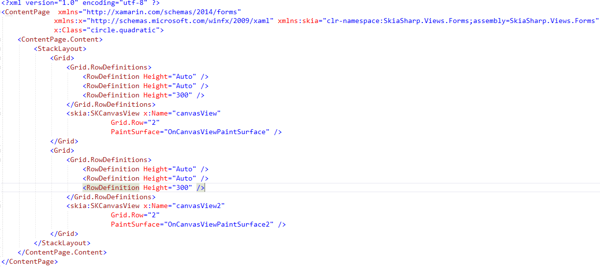

In this article, we see how to create a simple texture-figure in Xamarin Android. To that end, a Xamarin Form design is utilized in Visual Studio 2019. 1. In Visual Studio, create a blank Xamarin Form application, 2. First we need an .xaml page called quadratic.xaml./br> The .xaml page consists of two grids including two canvas: canvasView,canvasView2 as follows:
Second, we prepare canvas surface in OnCanvasViewPaintSurface function as follows:.
libraries: using System; using SkiaSharp; using SkiaSharp.Views.Forms; using Xamarin.Forms.Xaml;Third, we set the width and height of texture-figure as follows:.
float xCenter = info.Width / 2; float yCenter = info.Height / 2; float radius = 0.24f * Math.Min(info.Width, info.Height);Following codes decide the type of texture-figure. // Make union of top with bottom bottomRegion.Op(topRegion, SKRegionOperation.Union); // Exclusive-OR left and right with top and bottom leftRegion.Op(bottomRegion, SKRegionOperation.XOR);
To create 360 figure, we should add the codes below: // Draw 360 lines for (double angle = 0; angle < 360; angle++) { float x = 2 * radius * (float)Math.Cos(Math.PI * angle / 180); float y = 2 * radius * (float)Math.Sin(Math.PI * angle / 180); using (SKPaint strokePaint = new SKPaint()) { strokePaint.Color = SKColors.Blue; strokePaint.StrokeWidth = 3; canvas.DrawLine(0, 0, x, y, strokePaint); } }
The full version of OnCanvasViewPaintSurface is presented below. Note that in your .xaml.cs file, you must add a second function namely OnCanvasViewPaintSurface2 to create two figures.
##############################################
void OnCanvasViewPaintSurface(object sender, SKPaintSurfaceEventArgs args)
{
SKImageInfo info = args.Info;
SKSurface surface = args.Surface;
SKCanvas canvas = surface.Canvas;
canvas.Clear();
float xCenter = info.Width / 2;
float yCenter = info.Height / 2;
float radius = 0.24f * Math.Min(info.Width, info.Height);
using (SKRegion wholeScreenRegion = new SKRegion())
{
wholeScreenRegion.SetRect(new SKRectI(0, 0, info.Width, info.Height));
using (SKRegion leftRegion = new SKRegion(wholeScreenRegion))
using (SKRegion rightRegion = new SKRegion(wholeScreenRegion))
using (SKRegion topRegion = new SKRegion(wholeScreenRegion))
using (SKRegion bottomRegion = new SKRegion(wholeScreenRegion))
{
using (SKPath circlePath = new SKPath())
{
// Make basic circle path
circlePath.AddCircle(xCenter, yCenter, radius);
// Left leaf
circlePath.Transform(SKMatrix.MakeTranslation(-radius, 0));
leftRegion.SetPath(circlePath);
// Right leaf
circlePath.Transform(SKMatrix.MakeTranslation(2 * radius, 0));
rightRegion.SetPath(circlePath);
// Make union of right with left
leftRegion.Op(rightRegion, SKRegionOperation.Union);
// Top leaf
circlePath.Transform(SKMatrix.MakeTranslation(-radius, -radius));
topRegion.SetPath(circlePath);
// Combine with bottom leaf
circlePath.Transform(SKMatrix.MakeTranslation(0, 2 * radius));
bottomRegion.SetPath(circlePath);
// Make union of top with bottom
bottomRegion.Op(topRegion, SKRegionOperation.Union);
// Exclusive-OR left and right with top and bottom
leftRegion.Op(bottomRegion, SKRegionOperation.XOR);
// Set that as clip region
canvas.ClipRegion(leftRegion);
// Set transform for drawing lines from center
canvas.Translate(xCenter, yCenter);
// Draw 360 lines
for (double angle = 0; angle < 360; angle++)
{
float x = 2 * radius * (float)Math.Cos(Math.PI * angle / 180);
float y = 2 * radius * (float)Math.Sin(Math.PI * angle / 180);
using (SKPaint strokePaint = new SKPaint())
{
strokePaint.Color = SKColors.Blue;
strokePaint.StrokeWidth = 3;
canvas.DrawLine(0, 0, x, y, strokePaint);
}
}
}
}
}
}